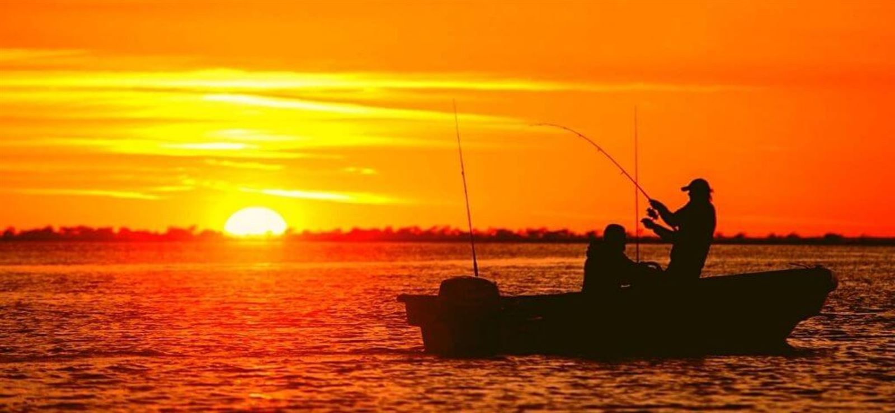
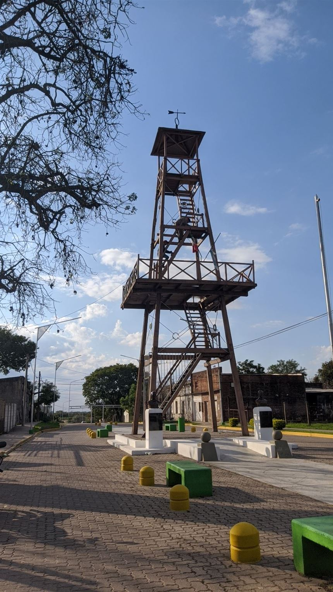
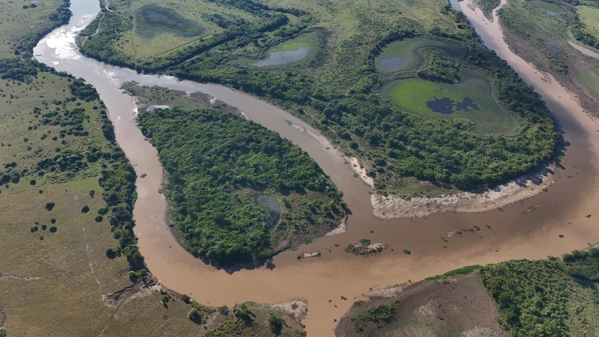
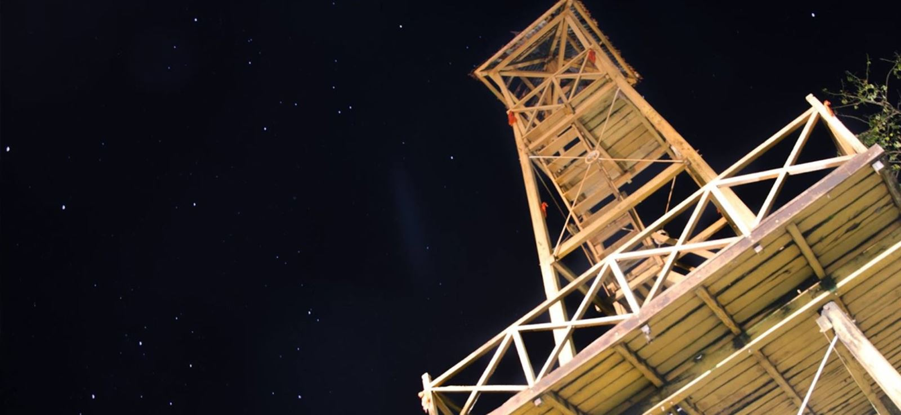

Ecoturismo y naturaleza
Aventurate en el corazón del sitio Ramsar Jaaukanigás: safaris fotográficos, avistaje de aves y navegación por los brazos del río Paraná.
Naturaleza, historia y la magia del humedal te esperan. Río, islas, pesca y la tranquilidad de una ciudad del norte santafesino.
Aventurate en el corazón del sitio Ramsar Jaaukanigás: safaris fotográficos, avistaje de aves y navegación por los brazos del río Paraná.

Relajate en el Club Pato Cuá, disfrutá de una jornada de pesca deportiva o pasá el día en familia en el camping y polideportivo local.

Subí a El Mangrullo, el mirador del antiguo fortín, recorré la Plaza 23 de Agosto y la Parroquia Nuestra Señora de la Asunción, y caminá por calles arboladas llenas de paz.

Declarada Área Natural Protegida de Interés Ecológico y Turístico por la Ordenanza Nº 026/2026.
Un paisaje de meandros, lagunas y monte nativo que resume la riqueza del humedal. Su protección permite planificar un turismo responsable, con educación ambiental y cuidado del patrimonio natural.
Leer la noticiaEl mirador del fortín que dio origen a la ciudad, fundada el 23 de agosto de 1880.
El mangrullo era la torre de vigilancia del fortín de frontera alrededor del cual nació Las Toscas. Hoy sigue en pie como emblema de la ciudad, aparece en su escudo y fue declarado Monumento Histórico Provincial en 1984.
Se encuentra sobre calle 13, entre 12 y 14, en el paseo histórico “El Mirador”, junto a los bustos de los fundadores Gaspar Kauffman y Antonio Tomassone.
Cómo llegar
Una mirada a nuestros paisajes y a la vida de la comunidad.
Fotos: Municipalidad de Las Toscas, salvo ecoturismo en Jaaukanigás (Claudio Bertonatti, CC BY-SA 4.0, vía Wikimedia Commons).
Las Toscas se encuentra en el departamento General Obligado, en el norte de la provincia de Santa Fe, sobre la Ruta Nacional 11 y a orillas del sistema de humedales del río Paraná.